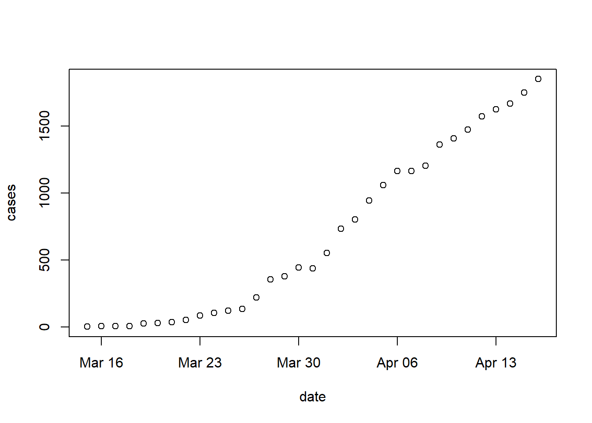
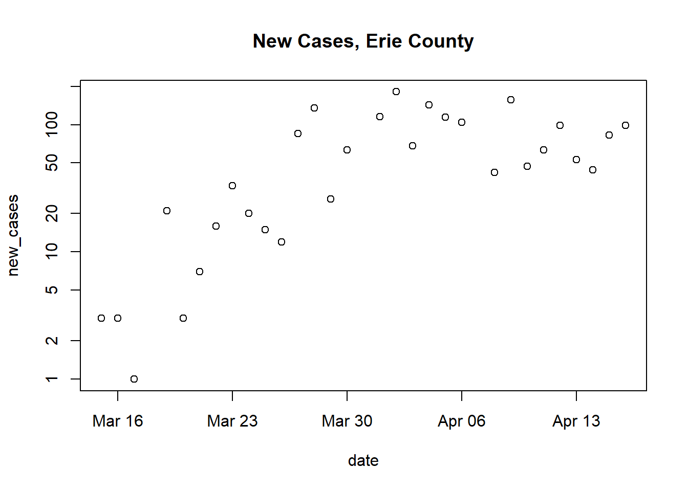

Week 2 The data frame
2.1 Day 8 (Monday) Zoom check-in
Review and troubleshoot (15 minutes)
The data frame (40 minutes)
Concept
Recall from Day 1:
Data frames are handy containers for experimental data.
Like a spreadsheet, a data frame has rows and columns
The columns of a data frame contain data fields.
- Each field could refer to a different type of object (numeric, string, etc.)
height,weight,age, etc.activity,duration,is work?,level,date, etc.
The rows of a data frame contain tuples of data
- Note: you must ensure units are consistent across tuples!
Rows and columns can be assigned names.
Create a simple data frame
Create a data frame with row and column names
2.1.0.1 Add a row/tuple
For now, use rbind(). Later you’ll learn about the more intuitive add_row() functionality of the tidyverse pacakge.
more_heights <- c(61, 68, 70)
more_weights <- c(101, 134, 175)
more_ages <- c(13, 16, 24)
df_more <- data.frame(more_heights, more_weights, more_ages)
colnames(df_more) <- c("hgt_inches", "wgt_lbs", "age_years")
rownames(df_more) <- c("Bob Kane", "Kari Patra", "Sam Groe")
named_df <- rbind(named_df, df_more)
named_df
## hgt_inches wgt_lbs age_years
## John Doe 72 190 44
## Pat Jones 65 130 35
## Sara Grant 68 150 37
## Bob Kane 61 101 13
## Kari Patra 68 134 16
## Sam Groe 70 175 242.1.0.2 Delete a row/tuple
Row deletion using row names is a little tricky ….
# suppose the study has some dropouts ....
dropouts = c("Bob Kane", "John Doe")
named_df <- named_df[! rownames(named_df) %in% dropouts, ]
named_df
## hgt_inches wgt_lbs age_years
## Pat Jones 65 130 35
## Sara Grant 68 150 37
## Kari Patra 68 134 16
## Sam Groe 70 175 24Row deletion using row indices is more straightforawrd. Just use negative subsetting ….
2.1.0.3 Some useful data frame operations
Try these out on your simple data frames df and named_df:
str(df) # structure (NOT string!)(sorry Python programmers ;)dim(df) # dimensionsView(df) # open tabular view of data framehead(df) # first few rowstail(df) # last few rowsnames(df) # column namescolnames(df) # column namesrownames(df) # row names
Creation
Data from the second day of quarantine
activity <- c("check e-mail", "breakfast", "conference call", "webinar", "walk") minutes <- c(20, 30, 60, 60, 60) is_work <- c(TRUE, FALSE, TRUE, TRUE, FALSE) levels <- c("connect", "exercise", "consult", "hobby", "essential") classification <- factor( c("connect", "essential", "connect", "consult", "exercise"), levels = levels ) dates <- rep("04-14-2020", length(activity)) date <- as.Date(dates, format = "%m-%d-%Y")Represent as a
data.frame()activities <- data.frame(activity, minutes, is_work, classification, date) activities ## activity minutes is_work classification date ## 1 check e-mail 20 TRUE connect 2020-04-14 ## 2 breakfast 30 FALSE essential 2020-04-14 ## 3 conference call 60 TRUE connect 2020-04-14 ## 4 webinar 60 TRUE consult 2020-04-14 ## 5 walk 60 FALSE exercise 2020-04-14Interogate for some basic properties, including
dim()ensions (number of rows and columns)
Column access
$[[
Updating or adding columns
Subsetting with [
- Subsetting rows
- Subsetting columns
- Subsetting rows and columns
Subsetting based on column values
example
row_idx <- activities$minutes >= 60 activities[row_idx,] ## activity minutes is_work classification date ## 3 conference call 60 TRUE connect 2020-04-14 ## 4 webinar 60 TRUE consult 2020-04-14 ## 5 walk 60 FALSE exercise 2020-04-14 ## same as, but more readable than, ... activities[activities$minutes >= 60,] ## activity minutes is_work classification date ## 3 conference call 60 TRUE connect 2020-04-14 ## 4 webinar 60 TRUE consult 2020-04-14 ## 5 walk 60 FALSE exercise 2020-04-14
Binding rows (and columns)
Activities, day 1
## 'classification' factor levels levels <- c("connect", "exercise", "consult", "hobby", "essential") ## Quarantine log, day 1 activity_day_1 <- c("check e-mail", "breakfast", "conference call", "webinar", "walk") minutes_day_1 <- c(20, 30, 60, 60, 60) is_work_day_1 <- c(TRUE, FALSE, TRUE, TRUE, FALSE) classification_day_1 <- factor( c("connect", "essential", "connect", "consult", "exercise"), levels = levels ) date_day_1 <- as.Date(rep("04-14-2020", length(activity_day_1)), "%m-%d-%Y") day1 <- data.frame( activity = activity_day_1, minutes = minutes_day_1, is_work = is_work_day_1, classification = classification_day_1, date = date_day_1 )Activities, day 2
activity_day_2 <- c("check e-mail", "breakfast", "conference call", "webinar", "read a book") minutes_day_2 <- c(20, 30, 60, 60, 60) is_work_day_2 <- c(TRUE, FALSE, TRUE, TRUE, FALSE) classification_day_2 <- factor( c("connect", "essential", "connect", "consult", "hobby"), levels = levels ) date_day_2 <- as.Date(rep("04-15-2020", length(activity_day_2)), "%m-%d-%Y") day2 <- data.frame( activity = activity_day_2, minutes = minutes_day_2, is_work = is_work_day_2, classification = classification_day_2, date = date_day_2 )Activities, both days
quarantine_log <- rbind(day1, day2) quarantine_log ## activity minutes is_work classification date ## 1 check e-mail 20 TRUE connect 2020-04-14 ## 2 breakfast 30 FALSE essential 2020-04-14 ## 3 conference call 60 TRUE connect 2020-04-14 ## 4 webinar 60 TRUE consult 2020-04-14 ## 5 walk 60 FALSE exercise 2020-04-14 ## 6 check e-mail 20 TRUE connect 2020-04-15 ## 7 breakfast 30 FALSE essential 2020-04-15 ## 8 conference call 60 TRUE connect 2020-04-15 ## 9 webinar 60 TRUE consult 2020-04-15 ## 10 read a book 60 FALSE hobby 2020-04-15
Writing and reading
Exmaple: round-trip
file <- tempfile() # temporary file ## file <- file.choose() ## file <- "activities.csv" ## file <- "/Users/ma38737/MyQuarantine/activities.csv" write.csv(quarantine_log, file, row.names = FALSE) read.csv(file) ## activity minutes is_work classification date ## 1 check e-mail 20 TRUE connect 2020-04-14 ## 2 breakfast 30 FALSE essential 2020-04-14 ## 3 conference call 60 TRUE connect 2020-04-14 ## 4 webinar 60 TRUE consult 2020-04-14 ## 5 walk 60 FALSE exercise 2020-04-14 ## 6 check e-mail 20 TRUE connect 2020-04-15 ## 7 breakfast 30 FALSE essential 2020-04-15 ## 8 conference call 60 TRUE connect 2020-04-15 ## 9 webinar 60 TRUE consult 2020-04-15 ## 10 read a book 60 FALSE hobby 2020-04-15
R and spreadsheets
An alternative way of working with data.frame()
with(): column selection and computationwithin(): update or add columnssubset(): row and column subset
Summarization
- Use
with()to simplify variable reference Create a new
data.frame()containing the summary
Summarization by group
aggregate()## minutes per day spent on each activity, from the quarantine_log aggregate(minutes ~ activity, quarantine_log, sum) ## activity minutes ## 1 breakfast 60 ## 2 check e-mail 40 ## 3 conference call 120 ## 4 walk 60 ## 5 webinar 120 ## 6 read a book 60 ## minutes per day spent on each clasasification aggregate(minutes ~ classification, quarantine_log, sum) ## classification minutes ## 1 connect 160 ## 2 exercise 60 ## 3 consult 120 ## 4 hobby 60 ## 5 essential 60 ## non-work activities per day aggregate(!is_work ~ date, quarantine_log, sum) ## date !is_work ## 1 2020-04-14 2 ## 2 2020-04-15 2
2.1.1 This week’s activities (5 minutes)
Goal: retrieve and summarize COVID 19 cases in Erie county and nationally
2.2 Day 9: Creation and manipulation
Creation
Last week we created vectors summarizing our quarantine activities
activity <- c("check e-mail", "breakfast", "conference call", "webinar", "walk")
minutes <- c(20, 30, 60, 60, 60)
is_work <- c(TRUE, FALSE, TRUE, TRUE, FALSE)
levels <- c("connect", "exercise", "consult", "hobby", "essential")
classification <- factor(
c("connect", "essential", "connect", "consult", "exercise"),
levels = levels
)
dates <- rep("04-14-2020", length(activity))
date <- as.Date(dates, format = "%m-%d-%Y")Each of these vectors is the same length, and are related to one another in a specific way – the first element of activity, ‘check e-mail’, is related to the first element of minutes, ‘20’, and to is_work, etc.
Use data.frame() to construct an object containing each of these vectors
Each argument to
data.frame()is a vector representing a columnThe
stringsAsFactors = FALSEargument says that character vectors should NOT be automatically coerced to factorsactivities <- data.frame( activity, minutes, is_work, classification, date, stringsAsFactors = FALSE ) activities ## activity minutes is_work classification date ## 1 check e-mail 20 TRUE connect 2020-04-14 ## 2 breakfast 30 FALSE essential 2020-04-14 ## 3 conference call 60 TRUE connect 2020-04-14 ## 4 webinar 60 TRUE consult 2020-04-14 ## 5 walk 60 FALSE exercise 2020-04-14We can query the object we’ve created for its
class(),dim()ensions, take a look at thehead()ortail()of the object, etc.names()returns the column names.class(activities) ## [1] "data.frame" dim(activities) # number of rows and columns ## [1] 5 5 head(activities, 3) # first three rows ## activity minutes is_work classification date ## 1 check e-mail 20 TRUE connect 2020-04-14 ## 2 breakfast 30 FALSE essential 2020-04-14 ## 3 conference call 60 TRUE connect 2020-04-14 names(activities) ## [1] "activity" "minutes" "is_work" "classification" ## [5] "date"
Column selection
Use [ to select rows and columns
activitiesis a two-dimensional objectSubset the data to contain the first and third rows and the first and fourth columns
Subset columns by name
Subset only by row or only by column by omiting the subscript index for that dimension
activities[c(1, 3), ] # all columns for rows 1 and 3 ## activity minutes is_work classification date ## 1 check e-mail 20 TRUE connect 2020-04-14 ## 3 conference call 60 TRUE connect 2020-04-14 activities[, c("activity", "minutes")] # all rows for columns 1 and 2 ## activity minutes ## 1 check e-mail 20 ## 2 breakfast 30 ## 3 conference call 60 ## 4 webinar 60 ## 5 walk 60Be careful when selecting a single column!
By default, R returns a vector
Use
drop = FALSEto return adata.frame
Use $ or [[ to select a column
Selection of individual columns as vectors is easy
An alternative, often used in scripts, is to use
[[, which requires the name of a variable provided as a character vector
Column selection and subsetting are often combined, e.g., to create a data.frame of work-related activities, or work-related activities lasting 60 minutes or longer
work_related_activities <- activities[ activities$is_work == TRUE, ]
work_related_activities
## activity minutes is_work classification date
## 1 check e-mail 20 TRUE connect 2020-04-14
## 3 conference call 60 TRUE connect 2020-04-14
## 4 webinar 60 TRUE consult 2020-04-14
row_idx <- activities$is_work & (activities$minutes >= 60)
activities[row_idx,]
## activity minutes is_work classification date
## 3 conference call 60 TRUE connect 2020-04-14
## 4 webinar 60 TRUE consult 2020-04-14Adding or updating columns
Use $ or [ or [[ to add a new column,
activities$is_long_work <- activities$is_work & (activities$minutes >= 60)
activities
## activity minutes is_work classification date is_long_work
## 1 check e-mail 20 TRUE connect 2020-04-14 FALSE
## 2 breakfast 30 FALSE essential 2020-04-14 FALSE
## 3 conference call 60 TRUE connect 2020-04-14 TRUE
## 4 webinar 60 TRUE consult 2020-04-14 TRUE
## 5 walk 60 FALSE exercise 2020-04-14 FALSE
## ...another way of doing the same thing
activities[["is_long_work"]] <- activities$is_work & (activities$minutes >= 60)
## ...and another way
activities[,"is_long_work"] <- activities$is_work & (activities$minutes >= 60)Columns can be updated in the same way
activities$activity <- toupper(activities$activity)
activities
## activity minutes is_work classification date is_long_work
## 1 CHECK E-MAIL 20 TRUE connect 2020-04-14 FALSE
## 2 BREAKFAST 30 FALSE essential 2020-04-14 FALSE
## 3 CONFERENCE CALL 60 TRUE connect 2020-04-14 TRUE
## 4 WEBINAR 60 TRUE consult 2020-04-14 TRUE
## 5 WALK 60 FALSE exercise 2020-04-14 FALSEReading and writing
Create a file path to store a ‘csv’ file. From day 7, the path could be temporary, chosen interactively, a relative path, or an absolute path
## could be any of these...
##
## interactive_file_path <- file.choose(new = TRUE)
## getcwd()
## relative_file_path <- "my_activity.rds"
## absolute_file_path_on_macOS <- "/Users/ma38727/my_activity.rda"
##
## ... but we'll use
temporary_file_path <- tempfile(fileext = ".csv")Use write.csv() to save the data.frame to disk as a plain text file in ‘csv’ (comma-separated value) format. The row.names = FALSE argument means that the row indexes are not saved to the file (row names are created when data is read in using read.csv()).
If you wish, use RStudio File -> Open File to navigate to the location where you saved the file, and open it. You could also open the file in Excel or other spreadsheet. Conversely, you can take an Excel sheet and export it as a csv file for reading into R.
Use read.csv() to import a plain text file formatted as csv
imported_activities <- read.csv(temporary_file_path, stringsAsFactors = FALSE)
imported_activities
## activity minutes is_work classification date is_long_work
## 1 CHECK E-MAIL 20 TRUE connect 2020-04-14 FALSE
## 2 BREAKFAST 30 FALSE essential 2020-04-14 FALSE
## 3 CONFERENCE CALL 60 TRUE connect 2020-04-14 TRUE
## 4 WEBINAR 60 TRUE consult 2020-04-14 TRUE
## 5 WALK 60 FALSE exercise 2020-04-14 FALSENote that some information has not survived the round-trip – the classification and date columns are plain character vectors.
class(imported_activities$classification)
## [1] "character"
class(imported_activities$date)
## [1] "character"Update these to be a factor() with specific levels, and a Date.
`
levels <- c("connect", "exercise", "consult", "hobby", "essential")
imported_activities$classification <- factor(
imported_activities$classification,
levels = levels
)
imported_activities$date <- as.Date(imported_activities$date, format = "%Y-%m-%d")
imported_activities
## activity minutes is_work classification date is_long_work
## 1 CHECK E-MAIL 20 TRUE connect 2020-04-14 FALSE
## 2 BREAKFAST 30 FALSE essential 2020-04-14 FALSE
## 3 CONFERENCE CALL 60 TRUE connect 2020-04-14 TRUE
## 4 WEBINAR 60 TRUE consult 2020-04-14 TRUE
## 5 WALK 60 FALSE exercise 2020-04-14 FALSEReading from a remote file (!)
Visit the New York Times csv file daily tally of COVID-19 cases in all US counties.
Read the data into an R
data.frameExplore the data
class(us) ## [1] "data.frame" dim(us) ## [1] 64707 6 head(us) ## date county state fips cases deaths ## 1 2020-01-21 Snohomish Washington 53061 1 0 ## 2 2020-01-22 Snohomish Washington 53061 1 0 ## 3 2020-01-23 Snohomish Washington 53061 1 0 ## 4 2020-01-24 Cook Illinois 17031 1 0 ## 5 2020-01-24 Snohomish Washington 53061 1 0 ## 6 2020-01-25 Orange California 6059 1 0Subset the data to only New York state or Erie county
ny_state <- us[us$state == "New York",] dim(ny_state) ## [1] 1780 6 erie <- us[(us$state == "New York") & (us$county == "Erie"), ] erie ## date county state fips cases deaths ## 2569 2020-03-15 Erie New York 36029 3 0 ## 3028 2020-03-16 Erie New York 36029 6 0 ## 3544 2020-03-17 Erie New York 36029 7 0 ## 4141 2020-03-18 Erie New York 36029 7 0 ## 4870 2020-03-19 Erie New York 36029 28 0 ## 5717 2020-03-20 Erie New York 36029 31 0 ## 6711 2020-03-21 Erie New York 36029 38 0 ## 7805 2020-03-22 Erie New York 36029 54 0 ## 9003 2020-03-23 Erie New York 36029 87 0 ## 10314 2020-03-24 Erie New York 36029 107 0 ## 11754 2020-03-25 Erie New York 36029 122 0 ## 13367 2020-03-26 Erie New York 36029 134 2 ## 15111 2020-03-27 Erie New York 36029 219 6 ## 16951 2020-03-28 Erie New York 36029 354 6 ## 18888 2020-03-29 Erie New York 36029 380 6 ## 20938 2020-03-30 Erie New York 36029 443 8 ## 23079 2020-03-31 Erie New York 36029 438 8 ## 25283 2020-04-01 Erie New York 36029 553 12 ## 27544 2020-04-02 Erie New York 36029 734 19 ## 29866 2020-04-03 Erie New York 36029 802 22 ## 32254 2020-04-04 Erie New York 36029 945 26 ## 34687 2020-04-05 Erie New York 36029 1059 27 ## 37160 2020-04-06 Erie New York 36029 1163 30 ## 39674 2020-04-07 Erie New York 36029 1163 36 ## 42227 2020-04-08 Erie New York 36029 1205 38 ## 44803 2020-04-09 Erie New York 36029 1362 46 ## 47417 2020-04-10 Erie New York 36029 1409 58 ## 50071 2020-04-11 Erie New York 36029 1472 62 ## 52744 2020-04-12 Erie New York 36029 1571 75 ## 55428 2020-04-13 Erie New York 36029 1624 86 ## 58128 2020-04-14 Erie New York 36029 1668 99 ## 60844 2020-04-15 Erie New York 36029 1751 110 ## 63572 2020-04-16 Erie New York 36029 1850 115
2.3 Day 10: subset(), with(), and within()
subset()
subset()ing a data.frame
Read the New York Times csv file summarizing COVID cases in the US.
Create subsets, e.g., to include only New York state, or only Erie county
ny_state <- subset(us, state == "New York") dim(ny_state) ## [1] 1780 6 tail(ny_state) ## date county state fips cases deaths ## 63611 2020-04-16 Warren New York 36113 81 5 ## 63612 2020-04-16 Washington New York 36115 46 0 ## 63613 2020-04-16 Wayne New York 36117 49 0 ## 63614 2020-04-16 Westchester New York 36119 21828 738 ## 63615 2020-04-16 Wyoming New York 36121 34 3 ## 63616 2020-04-16 Yates New York 36123 7 0 erie <- subset(us, (state == "New York") & county == "Erie") dim(erie) ## [1] 33 6 tail(erie) ## date county state fips cases deaths ## 50071 2020-04-11 Erie New York 36029 1472 62 ## 52744 2020-04-12 Erie New York 36029 1571 75 ## 55428 2020-04-13 Erie New York 36029 1624 86 ## 58128 2020-04-14 Erie New York 36029 1668 99 ## 60844 2020-04-15 Erie New York 36029 1751 110 ## 63572 2020-04-16 Erie New York 36029 1850 115
with()
Use with() to simply column references
Goal: calculate maximum number of cases in the Erie county data subset
First argument: a
data.framecontaining data to be manipulated –erieSecond argument: an expression to be evaluated, usually referencing columns in the data set –
max(cases)E.g., Calculate the maximum number of cases in the
eriesubset
Second argument can be more complicated, using {} to enclose several lines.
E.g., Calculate the number of new cases, and then reports the average number of new cases per day. We will use
diff()diff()calculates the difference between successive values of a vectorThe length of
diff(x)is one less than the length ofx
new_casesis thediff()of successive values ofcases, with an implicit initial value equal to 0.
within()
Adding and updating columns within() a data.frame
First argument: a
data.framecontaining data to be updated –erieSecond argument: an expression of one or more variable assignments, the assignments create new columns in the
data.frame.Example: add a
new_casescolumnerie_new_cases <- within(erie, { new_cases <- diff(c(0, cases)) }) head(erie_new_cases) ## date county state fips cases deaths new_cases ## 2569 2020-03-15 Erie New York 36029 3 0 3 ## 3028 2020-03-16 Erie New York 36029 6 0 3 ## 3544 2020-03-17 Erie New York 36029 7 0 1 ## 4141 2020-03-18 Erie New York 36029 7 0 0 ## 4870 2020-03-19 Erie New York 36029 28 0 21 ## 5717 2020-03-20 Erie New York 36029 31 0 3
2.4 Day 11: aggregate() and an initial work flow
aggregate() for summarizing columns by group
Goal: summarize maximum number of cases by county in New York state
Setup
Read and subset the New York Times data to contain only New York state data
aggregate()
First argument: a formula –
cases ~ countyRight-hand side: the variable to be used to subset (group) the data –
countyLeft-hand side: the variable to be used in the aggregation function –
cases
Second argument: source of data –
ny_stateThird argument: the function to be applied to each subset of data –
maxMaximum number of cases by county:
Exploring the data summary
Subset to some interesting ‘counties’
head(max_cases_by_county) ## county cases ## 1 Albany 581 ## 2 Allegany 28 ## 3 Broome 167 ## 4 Cattaraugus 32 ## 5 Cayuga 36 ## 6 Chautauqua 24 subset( max_cases_by_county, county %in% c("New York City", "Westchester", "Erie") ) ## county cases ## 14 Erie 1850 ## 29 New York City 123146 ## 57 Westchester 21828
Help: ?aggregate.formula
An initial work flow
Data input
url <- "https://raw.githubusercontent.com/nytimes/covid-19-data/master/us-counties.csv"
us <- read.csv(url, stringsAsFactors = FALSE)class(us)
## [1] "data.frame"
dim(us)
## [1] 64707 6
head(us)
## date county state fips cases deaths
## 1 2020-01-21 Snohomish Washington 53061 1 0
## 2 2020-01-22 Snohomish Washington 53061 1 0
## 3 2020-01-23 Snohomish Washington 53061 1 0
## 4 2020-01-24 Cook Illinois 17031 1 0
## 5 2020-01-24 Snohomish Washington 53061 1 0
## 6 2020-01-25 Orange California 6059 1 0Cleaning
dateis a plain-oldcharactervector, but should be aDate.Update, method 1
us$date <- as.Date(us$date, format = "%Y-%m-%d") head(us) ## date county state fips cases deaths ## 1 2020-01-21 Snohomish Washington 53061 1 0 ## 2 2020-01-22 Snohomish Washington 53061 1 0 ## 3 2020-01-23 Snohomish Washington 53061 1 0 ## 4 2020-01-24 Cook Illinois 17031 1 0 ## 5 2020-01-24 Snohomish Washington 53061 1 0 ## 6 2020-01-25 Orange California 6059 1 0Update, method 2
us <- within(us, { date = as.Date(date, format = "%Y-%m-%d") }) head(us) ## date county state fips cases deaths ## 1 2020-01-21 Snohomish Washington 53061 1 0 ## 2 2020-01-22 Snohomish Washington 53061 1 0 ## 3 2020-01-23 Snohomish Washington 53061 1 0 ## 4 2020-01-24 Cook Illinois 17031 1 0 ## 5 2020-01-24 Snohomish Washington 53061 1 0 ## 6 2020-01-25 Orange California 6059 1 0
Interested only in Erie county, New York state
Subset, method 1
Subset, method 2
Manipulation
Goal: calculate
new_casesas the difference between succesive days, usingdiff()Remember use of
diff()Update, methods 1 & 2
Simple visualization
Use a formula to describe the dependent (y-axis) variable as a function of the independent (x-axis) variable –
cases ~ date
maybe more informative: log-transformed new cases
plot( new_cases ~ date, erie, log = "y", main = "New Cases, Erie County" ) ## Warning in xy.coords(x, y, xlabel, ylabel, log): 3 y values <= 0 omitted from ## logarithmic plot
Help:
?plot.formula
Summary: calculate maximum (total) number of cases per county in New York state
For Erie county, let’s see how to calculate the maximum (total) number of cases
Subset US data to New York state
Summarize each county in the state using
aggregate().First argument: summarize
casesgrouped bycounty–cases ~ countySecond argument: data source –
ny_stateThird argument: function to apply to each subset –
max
subset()to select counties
Summary: calculate maximum (total) number of cases per state
Use entire data set,
usaggregate()cases by county and state –cases ~ county + statemax_cases_by_county_state <- aggregate( cases ~ county + state, us, max ) dim(max_cases_by_county_state) ## [1] 2767 3 head(max_cases_by_county_state) ## county state cases ## 1 Autauga Alabama 25 ## 2 Baldwin Alabama 102 ## 3 Barbour Alabama 14 ## 4 Bibb Alabama 24 ## 5 Blount Alabama 18 ## 6 Bullock Alabama 8aggregate()a second time, usingmax_cases_by_county_stateand aggregtaing by stateExplore the data
head(max_cases_by_state) ## state cases ## 1 Alabama 634 ## 2 Alaska 143 ## 3 Arizona 2264 ## 4 Arkansas 355 ## 5 California 10854 ## 6 Colorado 1549 subset( max_cases_by_state, state %in% c("California", "Illinois", "New York", "Washington") ) ## state cases ## 5 California 10854 ## 15 Illinois 18087 ## 34 New York 123146 ## 52 Washington 4811
2.5 Day 12 (Friday) Zoom check-in
2.6 Day 13:
2.7 Day 14
Self-directed activities.